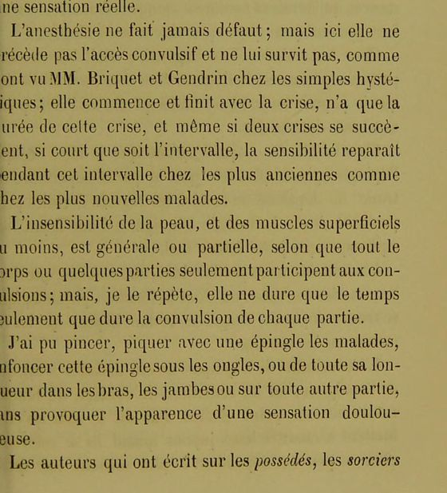

“Sans provoquer l’apparence d’une sensation douloureuse” (p. 63)
French: Paris 1863, p. 63, scan. Highlighted: the two sentences Lecky quotes.

Anaesthesia is never absent; but here it neither precedes the convulsive fit nor outlasts it, as MM. Briquet and Gendrin have observed in ordinary hysterics; it begins and ends with the crisis, lasts only as long as the crisis, and even if two crises follow each other, however short the interval, sensation returns during that interval, in the oldest patients as in the newest.
The insensibility of the skin, and at least of the superficial muscles, is general or partial according as the whole body or only some parts take part in the convulsions; but, I repeat, it lasts only as long as the convulsion of each part.
I have been able to pinch the patients, prick them with a pin, drive the pin under their nails, or its whole length into the arms, the legs or any other part, without producing the appearance of a painful sensation.
[p. 64:] The authors who wrote about the possessed and the sorcerers of past centuries also noted their insensibility, which was always evidence against them; but they do not say whether this insensibility was permanent or not … It is to be believed that they were like the patients of Morzine, keeping their sensibility while calm, but ceasing to be calm as soon as some circumstance brought them back to their idea; interrogations, bodily searches, the apparatus of justice, were among the circumstances that can rarely have failed to have this effect …
Original French
L’anesthésie ne fait jamais défaut ; mais ici elle ne précède pas l’accès convulsif et ne lui survit pas, comme l’ont vu MM. Briquet et Gendrin chez les simples hystériques ; elle commence et finit avec la crise, n’a que la durée de cette crise, et même si deux crises se succèdent, si court que soit l’intervalle, la sensibilité reparaît pendant cet intervalle chez les plus anciennes comme chez les plus nouvelles malades.
L’insensibilité de la peau, et des muscles superficiels au moins, est générale ou partielle, selon que tout le corps ou quelques parties seulement participent aux convulsions ; mais, je le répète, elle ne dure que le temps seulement que dure la convulsion de chaque partie.
J’ai pu pincer, piquer avec une épingle les malades, enfoncer cette épingle sous les ongles, ou de toute sa longueur dans les bras, les jambes ou sur toute autre partie, sans provoquer l’apparence d’une sensation douloureuse.
[p. 64, OCR:] Les auteurs qui ont écrit sur les possédés, les sorciers des derniers siècles, ont aussi noté leur insensibilité, qui était toujours une preuve à charge ; mais ils ne disent pas si cette insensibilité était ou non permanente … Il est à croire qu’ils étaient comme les malades de Morzines, conservant leur sensibilité pendant le calme, mais cessant d’être calmes dès qu’une circonstance les ramenait à leur idée ; les interrogatoires, les visites corporelles, l’appareil de la justice, étaient de ces circonstances qui devaient rarement manquer leur effet …
The transcription of Lecky’s note on this site reads “longuer” and “douleureuse” where Constans has “longueur” and “douloureuse”; whether these are Lecky’s slips or errors in the transcription has not been checked against his page.
Backlinks
Every place in Rationalism in Europe that links to this page (generated automatically when the site is built).
- Chapter I: note 104